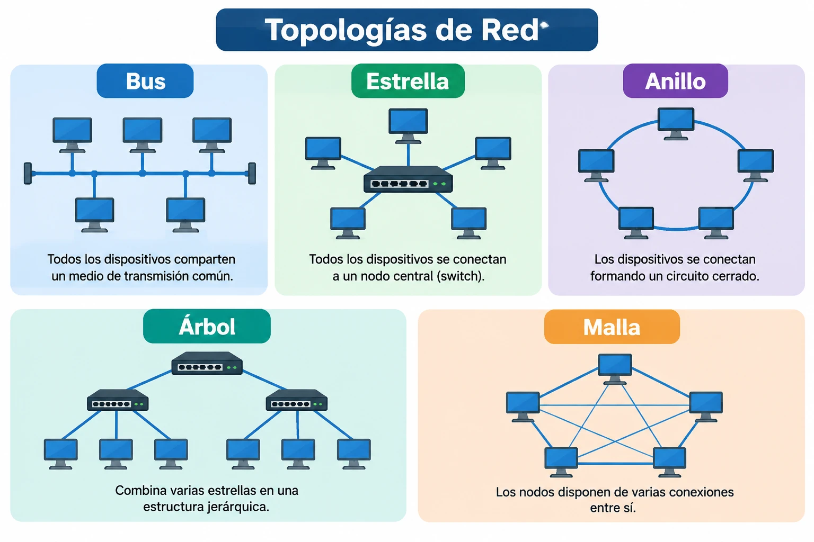
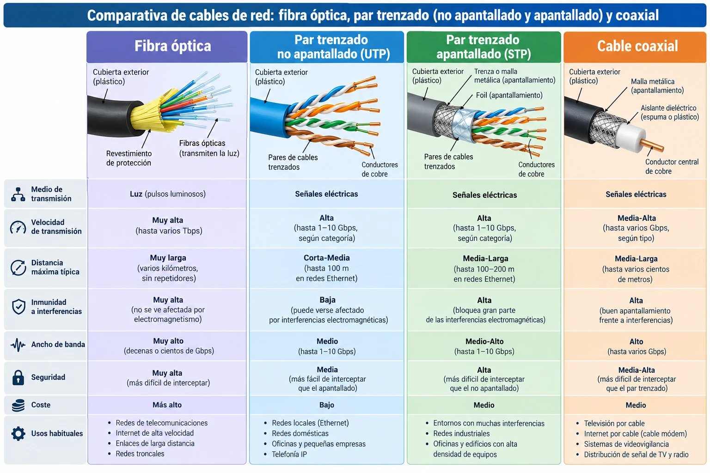
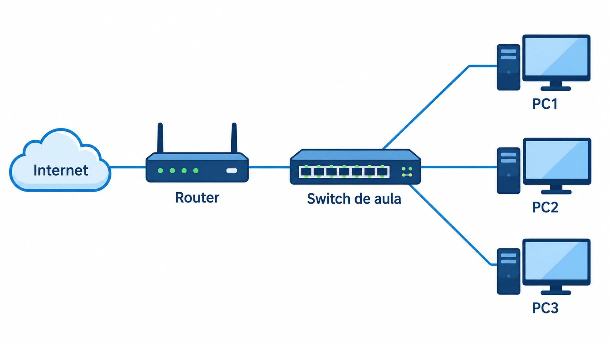
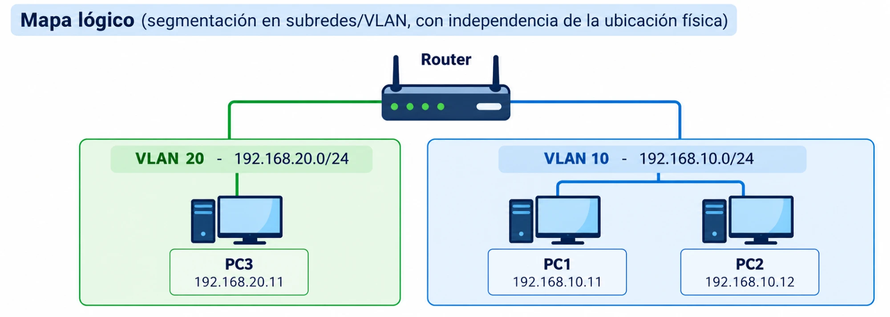
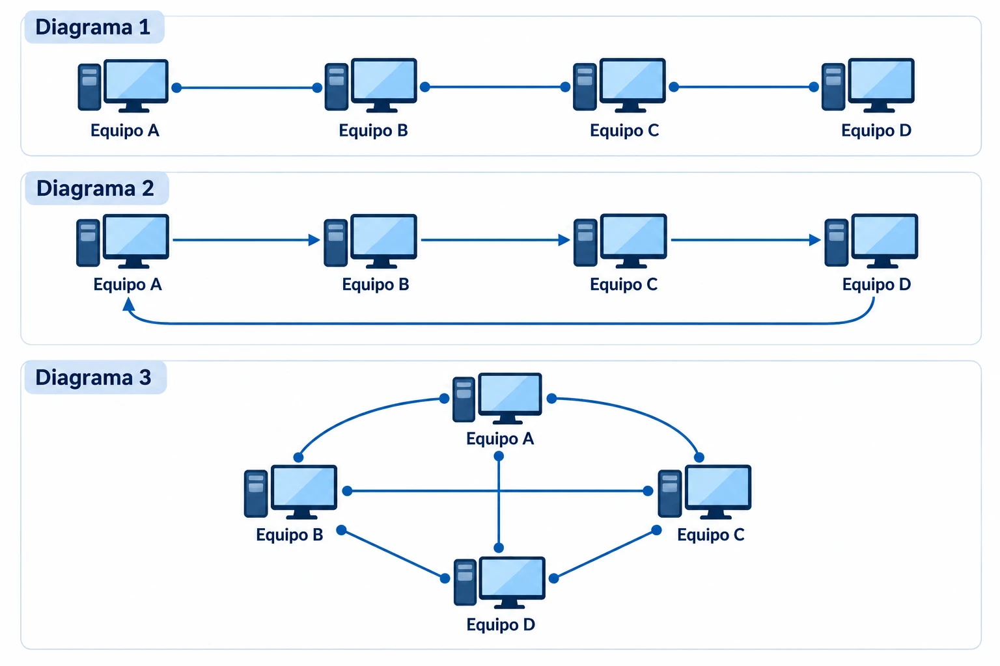

UT2. Redes¶
Volver al índice de todas las unidades
Duración
10 horas
Resultado de aprendizaje que se trabaja
RA5. Interconecta sistemas en red configurando dispositivos y protocolos.
2.1. Fundamentos de redes: tipos, topologías y componentes¶
¿Qué es una red informática?
Una red informática es un conjunto de dispositivos conectados que pueden intercambiar datos y compartir recursos mediante protocolos de comunicación.
Las redes permiten compartir archivos, utilizar servicios comunes y acceder a aplicaciones que se ejecutan en otros equipos. Por ejemplo, cuando visitas una página web, tu ordenador se comunica a través de una red con un servidor que proporciona los recursos necesarios para mostrarla.
En el desarrollo de aplicaciones web, las redes son fundamentales para comprender cómo se comunican el navegador del usuario, el servidor web y otros servicios, como una API o una base de datos.
Tipos de redes según su alcance
Las redes se pueden clasificar según el área que cubren y la tecnología utilizada.
| Tipo | Nombre | Características y ejemplos |
|---|---|---|
| PAN | Personal Area Network | Red de alcance personal, como la conexión Bluetooth entre un móvil y unos auriculares. |
| LAN | Local Area Network | Red de área local que conecta dispositivos en una vivienda, aula, oficina o edificio. |
| WLAN | Wireless Local Area Network | Red local inalámbrica, normalmente basada en Wi-Fi. Es un tipo de LAN. |
| MAN | Metropolitan Area Network | Red que conecta equipos o redes en un área metropolitana. |
| WAN | Wide Area Network | Red de área extensa que conecta redes situadas en lugares geográficos distantes. Internet es el ejemplo más conocido. |
Ejemplo: los ordenadores de un aula conectados a un switch forman parte de una LAN. Si se conectan mediante Wi-Fi a través de un punto de acceso, utilizan una WLAN.
Topologías de red
La topología de red describe cómo se organizan y conectan los dispositivos. Podemos distinguir entre:
- Topología física: describe las conexiones reales entre los dispositivos, el cableado y los equipos de interconexión.
- Topología lógica: describe cómo se comunican los dispositivos y cómo circulan los datos, independientemente de la disposición física del cableado.
Las principales topologías son:
| Topología | Descripción | Características |
|---|---|---|
| Bus | Los dispositivos comparten un medio de transmisión común. | Es sencilla, pero un fallo en el cable principal puede afectar a toda la red. Se asocia principalmente a redes antiguas. |
| Estrella | Todos los dispositivos se conectan a un nodo central, habitualmente un switch. | Es habitual en las redes Ethernet actuales. Un fallo en un cable suele afectar solo al dispositivo conectado, pero un fallo del switch puede interrumpir varias conexiones. |
| Anillo | Los dispositivos se conectan formando un circuito cerrado. | Los datos siguen un recorrido determinado. Se encuentra en algunas tecnologías y arquitecturas específicas. |
| Árbol | Combina varias estrellas en una estructura jerárquica. | Facilita organizar redes grandes en diferentes niveles. |
| Malla | Los nodos disponen de varias conexiones entre sí. | Puede proporcionar redundancia y tolerancia a fallos, aunque aumenta la complejidad y el coste. |
En las redes locales Ethernet actuales es frecuente encontrar una topología física en estrella o una estructura jerárquica de estrellas. Esto no significa que todas las redes utilicen la misma topología lógica.

Componentes principales de una red informática:
- Tarjeta de red (NIC): interfaz que conecta un equipo a la red, con una dirección MAC única.
- Switch (conmutador): interconecta equipos dentro de una misma LAN, dirigiendo el tráfico según la dirección MAC de destino.
- Router (encaminador): interconecta redes distintas y decide la ruta que deben seguir los paquetes entre ellas.
- Punto de acceso (AP): da conectividad inalámbrica a los dispositivos de una WLAN.
- Hub (concentrador): dispositivo antiguo que repite el tráfico a todos los puertos por igual (en desuso, sustituido por el switch).
- Medio de transmisión: cable de cobre, fibra óptica u ondas de radio, según el caso.
Idea clave
Este apartado da una visión general de los componentes de red; el punto 2.6 profundiza en el funcionamiento de switch y router (tablas de conmutación y de encaminamiento, NAT).
2.2. Medios de transmisión, cableado y mapa físico/lógico de una red local¶
Medios de transmisión
El medio de transmisión es el canal físico por el que viaja la señal (eléctrica, óptica o electromagnética) entre los dispositivos de una red. Se clasifican en dos grandes grupos:
- Medios guiados (o cableados): la señal viaja confinada dentro de un soporte físico. Incluyen el par trenzado, el cable coaxial y la fibra óptica.
- Medios no guiados (o inalámbricos): la señal se propaga libremente por el espacio, sin un soporte físico que la contenga. Incluyen las ondas de radio (Wi-Fi, Bluetooth), las microondas y los infrarrojos.
| Característica | Medios guiados | Medios no guiados |
|---|---|---|
| Movilidad | Nula; el dispositivo debe permanecer conectado al cable | Alta; permite desplazarse dentro del área de cobertura |
| Velocidad y fiabilidad | Generalmente mayores y más estables | Más variables; dependen de interferencias y distancia |
| Interferencias | Poco afectados (según el blindaje) | Más sensibles (otros dispositivos, obstáculos, otras redes cercanas) |
| Seguridad | Mayor; requiere acceso físico al cable | Menor; la señal puede interceptarse en el aire sin acceso físico |
| Coste de despliegue | Requiere tender cableado e infraestructura física | Menor coste de instalación; no requiere tender cable |
Medios guiados: tipos de cableado más habituales en redes LAN:

Categorías de cable UTP/FTP (a mayor categoría, mayor ancho de banda soportado): Cat 5e (hasta 1 Gbit/s), Cat 6 (hasta 10 Gbit/s a distancias cortas), Cat 6A y Cat 7/8 (10 Gbit/s y más, mayor apantallamiento).
Conectores más comunes:
- RJ-45: conector del cableado de par trenzado (Ethernet).
- SC / LC: conectores típicos de fibra óptica.
Tipos de cable UTP según el cableado interno:
- Cable directo (straight-through): los pines siguen el mismo orden en ambos extremos. Se usa para conectar dispositivos de distinto nivel (equipo-switch, switch-router).
- Cable cruzado (crossover): los pares de transmisión y recepción están cruzados. Se usa tradicionalmente para conectar dispositivos del mismo nivel (switch-switch, PC-PC), aunque la mayoría de equipos actuales incorporan detección automática (Auto-MDI-X) y ya no lo requieren.
Medios no guiados:
- Ondas de radio: utilizadas por Wi-Fi y Bluetooth; atraviesan obstáculos (paredes, tabiques) con cierta atenuación y no requieren visión directa entre emisor y receptor.
- Microondas: requieren visión directa entre antenas (enlaces punto a punto); se usan en enlaces de larga distancia entre edificios o en repetidores de telecomunicaciones.
- Infrarrojos: requieren visión directa y tienen un alcance muy corto; prácticamente en desuso en redes de datos, aunque siguen presentes en mandos a distancia.
Idea clave
La configuración práctica de una red Wi-Fi (SSID, cifrado WPA2/WPA3, puntos de acceso) se desarrolla en el apartado 2.5.
Mapa físico vs. mapa lógico de una red:
- Mapa físico: representa la ubicación real de los dispositivos, el cableado y su disposición en el espacio (racks, plantas, salas).
- Mapa lógico: representa cómo fluye la información entre los dispositivos con independencia de su ubicación física: direccionamiento IP, segmentación en subredes/VLAN, rutas.
Mapa físico (disposición real de los equipos y el cableado):

Pregunta rápida: observando el diagrama anterior, con el switch de aula conectado directamente a cada PC, ¿qué topología física (de las vistas en 2.1) tiene esta red? ¿Y la de tu propia aula?
Respuesta
Estrella: todos los equipos (PC1, PC2, PC3) se conectan a un dispositivo central —el switch de aula—, en lugar de conectarse directamente entre sí o compartir un único cable troncal. Es la topología física más habitual en las redes Ethernet actuales, y lo más probable es que sea también la de tu propia aula.

Idea clave
Dos equipos pueden estar físicamente muy cerca (mismo armario de comunicaciones) y pertenecer a segmentos lógicos completamente distintos (VLAN distintas), y viceversa.
2.3. Modelos de referencia: OSI y TCP/IP¶
Un modelo de referencia es una representación teórica, organizada en capas, de cómo se comunican los dispositivos en una red. Cada capa cumple una función concreta y se apoya en los servicios que le ofrece la capa inferior, sin necesidad de conocer los detalles de su funcionamiento interno (encapsulado). Esta organización en capas permite que fabricantes distintos desarrollen hardware y software compatibles entre sí, y facilita además localizar en qué punto se produce un fallo cuando algo no funciona.
Los dos modelos de referencia más utilizados son el modelo OSI (de carácter teórico y académico) y el modelo TCP/IP (el que realmente implementan los sistemas y se usa en Internet).
Modelo OSI (Open Systems Interconnection)
Definido por la ISO, organiza la comunicación en 7 capas, de la más cercana al usuario a la más cercana al medio físico:
| Capa | Nombre | Función | Ejemplos |
|---|---|---|---|
| 7 | Aplicación | Proporciona los servicios de red directamente a los programas del usuario | HTTP, DNS, SMTP, FTP |
| 6 | Presentación | Traduce, cifra/descifra y comprime los datos a un formato común entre sistemas | TLS/SSL, JPEG, ASCII |
| 5 | Sesión | Establece, mantiene y finaliza la comunicación entre aplicaciones | NetBIOS, RPC |
| 4 | Transporte | Comunicación extremo a extremo entre procesos, fiable o no | TCP, UDP |
| 3 | Red | Direccionamiento lógico y encaminamiento de paquetes entre redes distintas | IP, ICMP |
| 2 | Enlace de datos | Direccionamiento físico (MAC) y acceso al medio dentro de una misma red | Ethernet, Wi-Fi (802.11) |
| 1 | Física | Transmisión de los bits como señales eléctricas, ópticas o de radio | Cables, conectores, radiofrecuencia |
Modelo TCP/IP
Es el modelo que realmente implementan los sistemas operativos y los dispositivos de red, y en el que se basa Internet. Es más simple que el OSI: agrupa sus funciones en solo 4 capas:
| Capa | Función | Protocolos |
|---|---|---|
| Aplicación | Servicios usados directamente por los programas | HTTP/HTTPS, DNS, DHCP, FTP/FTPS/SFTP, SSH, Telnet |
| Transporte | Comunicación extremo a extremo | TCP (fiable, orientado a conexión), UDP (sin conexión, más rápido) |
| Internet | Direccionamiento y encaminamiento entre redes | IP (IPv4/IPv6), ICMP (diagnóstico, usado por ping), ARP (resuelve direcciones IP a MAC dentro de la misma red) |
| Acceso a la red | Transmisión física de los datos | Ethernet, Wi-Fi (802.11) |
Idea clave
Varios de estos protocolos se desarrollan con más detalle a lo largo de la unidad: DNS en 2.4, DHCP y Wi-Fi en 2.5, y Telnet/SSH y FTP/SFTP (como alternativas inseguras/seguras) en 2.7.
Comparación entre el modelo OSI y el modelo TCP/IP
| Modelo OSI (7 capas) | Modelo TCP/IP (4 capas) |
|---|---|
| 7. Aplicación | Aplicación |
| 6. Presentación | Aplicación |
| 5. Sesión | Aplicación |
| 4. Transporte | Transporte |
| 3. Red | Internet |
| 2. Enlace de datos | Acceso a la red |
| 1. Física | Acceso a la red |
Idea clave
El modelo TCP/IP agrupa en una única capa de Aplicación lo que el modelo OSI reparte entre Aplicación, Presentación y Sesión; y agrupa en Acceso a la red las capas de Enlace de datos y Física. El modelo OSI, más detallado, se usa sobre todo como referencia didáctica y para diagnosticar problemas de red capa por capa ("¿falla el cable? ¿falla el direccionamiento IP? ¿falla la aplicación?"); el modelo TCP/IP es el que realmente funciona en la práctica.
2.4. Protocolo TCP/IP: direccionamiento IPv4/IPv6, DNS¶
Este apartado se centra en la capa Internet del modelo TCP/IP (ver 2.3), responsable del direccionamiento y el encaminamiento de los paquetes entre redes.
Direccionamiento IPv4: dirección de 32 bits, representada en 4 grupos decimales (0-255) separados por puntos (p. ej. 192.168.1.10).
Clases de redes IPv4
Históricamente, las direcciones IPv4 se agrupaban en clases según el valor de su primer octeto, lo que determinaba de forma implícita cuántos bits correspondían a la red y cuántos al host:
| Clase | Intervalo | Máscara por defecto | Bits de red / Bits de host | Hosts por red | Uso |
|---|---|---|---|---|---|
| A | 0.0.0.0 – 127.255.255.255 | 255.0.0.0 (/8) | 8 / 24 | ~16,7 millones | Redes muy grandes (grandes organizaciones, ISP) |
| B | 128.0.0.0 – 191.255.255.255 | 255.255.0.0 (/16) | 16 / 16 | 65 534 | Redes medianas (universidades, empresas grandes) |
| C | 192.0.0.0 – 223.255.255.255 | 255.255.255.0 (/24) | 24 / 8 | 254 | Redes pequeñas; la más habitual en redes domésticas y de oficina |
| D | 224.0.0.0 – 239.255.255.255 | — | — | — | Multidifusión (multicast) |
| E | 240.0.0.0 – 255.255.255.255 | — | — | — | Uso experimental/reservado |
Idea clave
El rango 127.0.0.0/8 (dentro de la clase A) está reservado para loopback (127.0.0.1 = localhost, la propia máquina) y nunca se asigna a un equipo de la red.
Hoy en día casi ninguna red se ciñe a estas clases de forma estricta: lo habitual es el direccionamiento sin clases (classless), mediante notación CIDR, que permite máscaras de cualquier longitud según las necesidades reales de cada red, en lugar de limitarse a /8, /16 o /24.
- Máscara de subred: determina qué parte de la dirección identifica la red y cuál el equipo (host). Se puede expresar en notación decimal (
255.255.255.0) o CIDR (/24). - Direcciones privadas (uso interno, no enrutables en Internet):
10.0.0.0/8,172.16.0.0/12,192.168.0.0/16. - Puerta de enlace (gateway): dirección del dispositivo (router) por el que un equipo envía el tráfico destinado a otras redes.
Ejemplo resuelto: dirección de red, broadcast y rango de hosts
Dada la dirección 192.168.4.77/26, calcula la dirección de red, la dirección de broadcast y el rango de direcciones de host válidas.
Solución
La máscara /26 equivale a 255.255.255.192. El salto entre redes consecutivas en el último octeto es 256 − 192 = 64, por lo que las redes posibles son: .0, .64, .128 y .192.
El último octeto de la IP dada es 77, que cae en el intervalo 64–127, así que:
- Dirección de red:
192.168.4.64 - Rango de hosts válidos:
192.168.4.65–192.168.4.126 - Dirección de broadcast:
192.168.4.127
Subnetting: dividir una red en subredes
El subnetting consiste en dividir una red en varias subredes más pequeñas, "tomando prestados" bits de la parte de host de la dirección para ampliar la parte de red. Permite, por ejemplo, separar los equipos de distintos departamentos o aulas en segmentos independientes, reduciendo el tamaño de cada dominio de difusión (broadcast) y mejorando la organización y la seguridad de la red.
Por cada bit que se "presta" a la parte de red, el número de subredes se multiplica por 2 y el número de hosts disponibles por subred se divide entre 2.
Ejemplo: dividir 192.168.1.0/24 en 2 subredes iguales
Partimos de una red /24 (254 hosts utilizables) y tomamos 1 bit prestado, pasando a una máscara /25 (255.255.255.128):
| Subred | Dirección de red | Rango de hosts | Broadcast |
|---|---|---|---|
| 1 | 192.168.1.0/25 | 192.168.1.1 – 192.168.1.126 | 192.168.1.127 |
| 2 | 192.168.1.128/25 | 192.168.1.129 – 192.168.1.254 | 192.168.1.255 |
Ejemplo: dividir la misma red en 4 subredes iguales
Tomando 2 bits prestados, pasamos a una máscara /26 (255.255.255.192):
| Subred | Dirección de red | Rango de hosts | Broadcast |
|---|---|---|---|
| 1 | 192.168.1.0/26 | 192.168.1.1 – 192.168.1.62 | 192.168.1.63 |
| 2 | 192.168.1.64/26 | 192.168.1.65 – 192.168.1.126 | 192.168.1.127 |
| 3 | 192.168.1.128/26 | 192.168.1.129 – 192.168.1.190 | 192.168.1.191 |
| 4 | 192.168.1.192/26 | 192.168.1.193 – 192.168.1.254 | 192.168.1.255 |
Idea clave
El "salto" entre direcciones de red consecutivas coincide con el valor del último octeto significativo de la máscara (p. ej. 256 − 192 = 64 en el ejemplo con /26). Es un atajo práctico para calcular subredes sin tener que convertir a binario cada vez.
Ejercicio propuesto: divide la red 192.168.20.0/24 en 8 subredes iguales. Indica la máscara resultante y, para cada subred, su dirección de red, el rango de direcciones de host válidas y la dirección de broadcast.
Solución
Para 8 subredes se necesitan 3 bits prestados (2³ = 8), por lo que la máscara pasa de /24 a /27 (255.255.255.224). El salto entre subredes es 256 − 224 = 32.
| Subred | Dirección de red | Rango de hosts | Broadcast |
|---|---|---|---|
| 1 | 192.168.20.0/27 | 192.168.20.1 – 192.168.20.30 | 192.168.20.31 |
| 2 | 192.168.20.32/27 | 192.168.20.33 – 192.168.20.62 | 192.168.20.63 |
| 3 | 192.168.20.64/27 | 192.168.20.65 – 192.168.20.94 | 192.168.20.95 |
| 4 | 192.168.20.96/27 | 192.168.20.97 – 192.168.20.126 | 192.168.20.127 |
| 5 | 192.168.20.128/27 | 192.168.20.129 – 192.168.20.158 | 192.168.20.159 |
| 6 | 192.168.20.160/27 | 192.168.20.161 – 192.168.20.190 | 192.168.20.191 |
| 7 | 192.168.20.192/27 | 192.168.20.193 – 192.168.20.222 | 192.168.20.223 |
| 8 | 192.168.20.224/27 | 192.168.20.225 – 192.168.20.254 | 192.168.20.255 |
IPv6: dirección de 128 bits, representada en 8 grupos hexadecimales (p. ej. 2001:0db8:0000:0000:0000:ff00:0042:8329, simplificable a 2001:db8::ff00:42:8329), diseñada para resolver el agotamiento de direcciones de IPv4 y simplificar el direccionamiento.
DNS (Domain Name System): servicio distribuido y jerárquico que traduce nombres de dominio legibles (www.ejemplo.com) a direcciones IP. En el proceso de resolución, el equipo consulta a un servidor DNS (a menudo el del proveedor de Internet o uno público como 8.8.8.8), que responde directamente si conoce la respuesta o la reenvía a otros servidores DNS hasta obtenerla.
2.5. Configuración de redes cableadas e inalámbricas¶
Configuración de la dirección IP de un equipo:
- Estática: se asigna manualmente (IP, máscara, puerta de enlace, DNS). Habitual en servidores e impresoras, donde interesa que la dirección no cambie.
- Dinámica (DHCP): un servidor DHCP asigna automáticamente la configuración de red a cada equipo que se conecta, durante un tiempo determinado (concesión o lease). Es la opción por defecto en la mayoría de redes domésticas y de oficina.
| SO | Configuración gráfica | Comandos / archivos |
|---|---|---|
| Windows | Configuración > Red e Internet | netsh, PowerShell Get-NetIPConfiguration |
| Linux | NetworkManager (GUI) | nmcli, /etc/netplan/*.yaml (Ubuntu), ip |
Redes inalámbricas (Wi-Fi):
- SSID: nombre que identifica la red inalámbrica.
Tipos de redes Wi-Fi
Según su modo de funcionamiento:
- Modo infraestructura: los dispositivos se conectan a través de un punto de acceso (AP) central, que gestiona la red y suele dar salida a otra red (como Internet). Es el modo habitual en redes domésticas, de oficina y de centros educativos.
- Modo ad-hoc: los dispositivos se conectan directamente entre sí, sin un punto de acceso central (red peer-to-peer). Apenas se usa hoy en día, salvo en casos puntuales de conexión directa entre dos equipos.
Según el estándar 802.11 (sucesivas generaciones, con mejoras de velocidad, alcance y banda de frecuencia):
| Estándar | Nombre comercial | Banda | Velocidad máxima (teórica) |
|---|---|---|---|
| 802.11a | — | 5 GHz | 54 Mbit/s |
| 802.11b | — | 2,4 GHz | 11 Mbit/s |
| 802.11g | — | 2,4 GHz | 54 Mbit/s |
| 802.11n | Wi-Fi 4 | 2,4 GHz y/o 5 GHz | 600 Mbit/s |
| 802.11ac | Wi-Fi 5 | 5 GHz | ~6,9 Gbit/s |
| 802.11ax | Wi-Fi 6 / Wi-Fi 6E | 2,4, 5 y 6 GHz (6E) | ~9,6 Gbit/s |
| 802.11be | Wi-Fi 7 | 2,4, 5 y 6 GHz | ~46 Gbit/s |
Idea clave
Las velocidades de la tabla son máximos teóricos del estándar, no velocidades reales: el rendimiento efectivo depende del número de dispositivos conectados, los obstáculos, las interferencias y el hardware concreto del punto de acceso y del cliente. Los routers domésticos actuales suelen ser de doble banda (2,4 GHz y 5 GHz simultáneamente) o triple banda (añadiendo 6 GHz), ofreciendo a cada dispositivo la banda más adecuada según su distancia al punto de acceso y sus necesidades de velocidad.
- Ampliación de cobertura: un único punto de acceso no siempre cubre todo el espacio necesario. Un repetidor (o un AP en modo repetidor, mediante el estándar WDS, Wireless Distribution System) retransmite la señal para ampliar el alcance, a costa de reducir el ancho de banda disponible en cada salto adicional. Las redes mesh modernas (varios puntos que se coordinan entre sí, con el mismo SSID e itinerancia automática entre ellos) resuelven el mismo problema de forma más eficiente y con gestión centralizada.
Seguridad en las redes inalámbricas
A diferencia de una red cableada, una red Wi-Fi puede ser "escuchada" por cualquier dispositivo dentro de su alcance sin necesidad de acceso físico, lo que hace imprescindible protegerla adecuadamente.
Protocolos de cifrado (de menor a mayor seguridad):
| Protocolo | Cifrado | Seguridad |
|---|---|---|
| WEP | RC4, clave estática | Obsoleto e inseguro; se puede romper en minutos |
| WPA | TKIP (mejora de WEP) | Solución de transición; también vulnerable |
| WPA2 | AES-CCMP | Estándar durante años; seguro si se usa una contraseña robusta |
| WPA3 | AES-GCMP + SAE | Actual; protege incluso con contraseñas débiles frente a ataques de diccionario fuera de línea |
Modos de autenticación:
- WPA-Personal (PSK, Pre-Shared Key): todos los usuarios comparten la misma contraseña. Habitual en redes domésticas y pequeñas oficinas.
- WPA-Enterprise (802.1X): cada usuario se autentica con sus propias credenciales contra un servidor RADIUS. Permite revocar el acceso a un único usuario sin cambiar la contraseña de toda la red; habitual en empresas y centros educativos.
Buenas prácticas adicionales:
- Cambiar el usuario y la contraseña por defecto del panel de administración del router/AP.
- Usar contraseñas Wi-Fi largas y robustas: incluso con WPA2/WPA3, una contraseña débil sigue siendo el punto más vulnerable.
- Desactivar WPS (Wi-Fi Protected Setup): su PIN de 8 dígitos es vulnerable a ataques de fuerza bruta.
- Mantener actualizado el firmware del punto de acceso/router.
Ocultar el SSID y el filtrado MAC no son medidas de seguridad reales
Ocultar el SSID solo evita que la red aparezca en el listado habitual de redes disponibles, pero sigue siendo detectable con herramientas específicas. El filtrado por dirección MAC se puede eludir fácilmente suplantando (spoofing) una MAC autorizada. Ambas pueden usarse como medida adicional, pero nunca deben sustituir a un buen cifrado (WPA2/WPA3).
2.6. Dispositivos de interconexión y encaminamiento¶
- Switch (conmutador): opera a nivel de enlace, interconectando equipos de una misma LAN. Aprende qué dirección MAC está conectada a cada puerto (tabla de conmutación) y reenvía el tráfico solo al puerto correspondiente, en lugar de a todos (a diferencia del antiguo hub).
- Router (encaminador): opera a nivel de red, interconectando redes distintas (por ejemplo, la LAN doméstica con Internet). Mantiene una tabla de encaminamiento (routing table) que indica por qué interfaz/siguiente salto se debe enviar el tráfico según la red de destino.
Tipos de encaminamiento:
- Estático: las rutas se configuran manualmente; sencillo pero poco escalable.
- Dinámico: los routers intercambian información de rutas automáticamente mediante protocolos de encaminamiento (p. ej. OSPF, RIP), adaptándose a cambios en la red.
NAT (Network Address Translation): técnica, habitual en routers domésticos, que traduce las direcciones IP privadas de la LAN a una única IP pública para acceder a Internet, permitiendo que muchos equipos compartan una sola dirección pública.
VLAN (Virtual LAN): segmenta lógicamente una misma red física en varias redes independientes, sin necesidad de cablear switches separados. Requiere un switch gestionable (o switch L3), en cuya configuración se asignan los puertos a una VLAN u otra.
- Puerto de acceso (access): pertenece a una única VLAN; es el modo habitual para conectar equipos finales (PC, impresora).
- Puerto troncal (trunk): transporta el tráfico de varias VLAN a la vez, etiquetando cada trama con el identificador de VLAN correspondiente (estándar 802.1Q); se usa para enlazar switches entre sí o conectar un router que hace de puerta de enlace de varias VLAN.
Idea clave
Dos equipos conectados al mismo switch físico, pero en VLAN distintas, no pueden comunicarse entre sí sin pasar por un router (o una función de encaminamiento entre VLAN) — exactamente igual que si estuvieran en dos redes físicamente separadas.
2.7. Acceso a redes de área extensa y seguridad en comunicaciones¶
Tecnologías de acceso a redes WAN / Internet:
| Tecnología | Medio | Características |
|---|---|---|
| ADSL | Par de cobre telefónico | Velocidad asimétrica, en desuso |
| Cable (DOCSIS) | Coaxial | Compartido por zona, buena velocidad de bajada |
| Fibra óptica (FTTH) | Fibra hasta el hogar | Alta velocidad simétrica, tecnología actual de referencia |
| Redes móviles | Radiofrecuencia | 4G/5G, cobertura amplia, uso también fijo (FWA) |
VPN (Virtual Private Network): crea un túnel cifrado a través de una red no confiable (como Internet), permitiendo acceder de forma segura a una red privada remota como si el equipo estuviera físicamente conectado a ella. Muy usada para el teletrabajo y para interconectar sedes de una empresa.
Servidor proxy: actúa como intermediario entre los equipos de una red local e Internet, reenviando las peticiones en su nombre. Es habitual en redes de empresas o centros educativos, con dos funciones principales:
- Caché de contenidos: guarda copia de los recursos más solicitados, reduciendo el consumo de ancho de banda y acelerando el acceso a lo que ya han consultado otros equipos de la red.
- Filtrado de contenidos: permite bloquear el acceso a determinados sitios o categorías (redes sociales, contenido no apropiado...) de forma centralizada, sin configurar cada equipo por separado.
Squid es la implementación libre de proxy más extendida en entornos Linux.
Idea clave
Un proxy actúa en nombre del cliente hacia Internet (forward proxy); no debe confundirse con un proxy inverso (reverse proxy), que actúa en nombre de un servidor hacia sus clientes y que se estudia en otros módulos relacionados con el despliegue de aplicaciones web.
Protocolos seguros de comunicación:
| Protocolo inseguro | Alternativa segura |
|---|---|
| HTTP | HTTPS (HTTP sobre TLS/SSL) |
| Telnet | SSH |
| FTP | FTPS / SFTP |
TLS/SSL: protocolos que cifran la comunicación entre cliente y servidor, garantizando confidencialidad (nadie puede leer los datos), integridad (no se pueden modificar sin detectarlo) y autenticidad (mediante certificados digitales).
Actividades¶
Actividad 2.1 — Identifica la topología
Observa los tres diagramas siguientes. Para cada uno, indica qué topología de red representa (de las vistas en el apartado 2.1) y justifica tu respuesta explicando cómo se conectan los equipos entre sí.

Actividad 2.2 — Mapa físico y lógico de una red
Un aula tiene 15 equipos (PC1 a PC15) conectados a un switch, y el switch conectado a un router con salida a Internet, como en los diagramas de este apartado.
a) Dibuja el mapa físico: representa cómo se conectan físicamente el router, el switch y los 15 PCs.
b) Dibuja el mapa lógico: asigna a cada PC una dirección IP dentro de la red 192.168.1.0/24 (por ejemplo, de 192.168.1.10 a PC1 hasta 192.168.1.24 a PC15) y representa el camino que sigue el tráfico de cada PC hacia Internet a través del router.
Actividad 2.3 — Direccionamiento IP
Dada la red 192.168.10.0/24, calcula la dirección de red, la de broadcast y el rango de direcciones válidas para host. Configura después esa dirección de forma estática en una máquina virtual y verifica la conectividad con ping hacia otro equipo de la misma red.
Actividad 2.4 — Subnetting
El departamento de informática de un centro necesita dividir la red 192.168.5.0/24 en 4 subredes iguales, una por cada aula. Calcula la máscara resultante y, para cada subred, su dirección de red, el rango de direcciones de host válidas y la dirección de broadcast. Configura después una de esas subredes en una máquina virtual y comprueba con ping que no se alcanza directamente a un equipo de otra subred.
Actividad 2.5 — DHCP vs. IP estática
En un entorno con dos máquinas virtuales y un servicio DHCP, observa qué configuración de red recibe automáticamente un cliente. Cambia después esa misma máquina a configuración estática y razona en qué casos (servidor, impresora, PC de usuario) conviene cada modalidad.